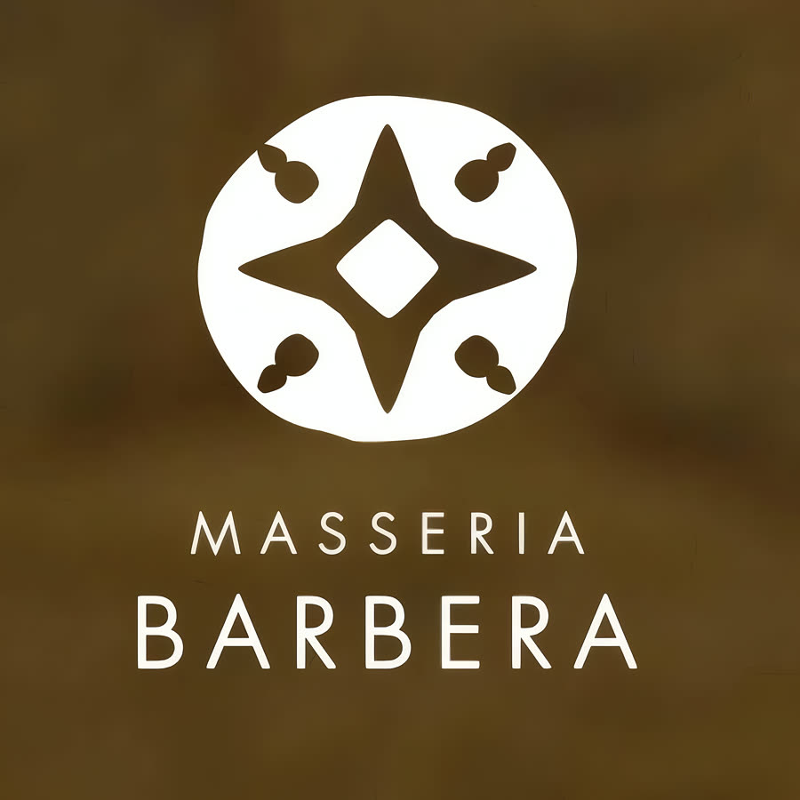

Si sta fuori dal paese
L'indirizzo è SP 97, km 5.8505, fuori dall'abitato di Minervino Murge, in provincia di Barletta-Andria-Trani. Ci si arriva in auto. Apri la mappa
Minervino Murge · Alta Murgia · Puglia
Un'osteria di masseria sul balcone delle Puglie, a 429 metri sopra la valle dell'Ofanto. Slow Food le ha dato la Chiocciola due anni di fila, nell'edizione 2025 e in quella 2026 di Osterie d'Italia.

Come si raccontano loro
«Immersa nei colori dell'Alta Murgia, la Masseria offre i sapori più genuini della nostra terra a KmZero…»
Km zero, qui, è una misura corta davvero: il raggio è quello dei campi che si vedono dalla strada provinciale, fra i pascoli dell'Alta Murgia e il grano che d'estate diventa stoppia.
Il riconoscimento
Nella guida Osterie d'Italia di Slow Food la Chiocciola è il riconoscimento più alto. Non premia soltanto quello che arriva a tavola: premia i locali che tengono insieme l'ambiente, la cucina e l'accoglienza in sintonia con Slow Food.
Masseria Barbera è nell'elenco delle Chiocciole pugliesi nell'edizione 2025 e di nuovo in quella 2026. Due anni consecutivi, in una regione dove la concorrenza a tavola non è esattamente scarsa.
Gli elenchi completi, regione per regione, sono pubblicati da Slow Food.
Dove si è
Minervino Murge sta a 429 metri, affacciato sulla valle dell'Ofanto: per questo lo chiamano il balcone delle Puglie. Il paese è in gran parte compreso entro i confini del Parco nazionale dell'Alta Murgia, istituito nel 2004.
Intorno c'è quello che l'Alta Murgia è davvero: pietra affiorante, pascoli, muretti a secco, e campi di grano che d'estate cambiano colore tre volte.
Dopo la mietitura, da queste parti le stoppie si bruciavano. Chi non poteva permettersi la farina bianca tornava sui campi anneriti a raccogliere quello che restava: ne usciva una farina scura, di odore tostato, che oggi ha un nome buono, grano arso, e allora era soltanto il modo di fare il pane con poco.
È la storia contadina del pezzo di Puglia in cui questa masseria sta, fra Minervino e la valle dell'Ofanto.
Come funziona
La masseria non sta in centro e non ha una vetrina su cui leggere gli orari. Tre cose da sapere prima di mettersi in strada.
L'indirizzo è SP 97, km 5.8505, fuori dall'abitato di Minervino Murge, in provincia di Barletta-Andria-Trani. Ci si arriva in auto. Apri la mappa
Le aperture di una masseria seguono la stagione e le prenotazioni del giorno. Il modo più rapido per saperle è chiedere: 368 370 57 25
Una chiamata il giorno prima evita di fare la strada per niente, e permette di dire in anticipo quante persone siete e se c'è qualcosa che non mangiate.
Contatti